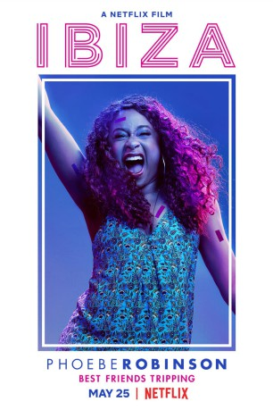

#9029 Ibiza
 
 IMDB-Wertung: 5.2 / 10
IMDB-Wertung: 5.2 / 10  Tomatometer: 67
Tomatometer: 67  Metascore: 56
Metascore: 56 
Zu einer wichtigen Geschäftsreise nach Barcelona wird Harper (Gillian Jacobs) von ihren zwei besten Freundinnen Nikki (Vanessa Bayer) und Leah (Phoebe Robinson) begleitet, die sich einfach nicht davon abbringen lassen, sich ihr anzuschließen. Und gemeinsam unterwegs macht man dann auch ein wenig Party, wobei Harper sofort DJ Leo (Richard Madden) ins Auge fällt. Sie verliebt sich umgehend und bekommt dann auch noch seine Telefonnummer. Doch leider geht es für Leo gleich weiter. Er legt in Ibiza auf. Für Nikki und Sarah ist klar: Scheiß auf die Arbeit, ab geht es mit Harper nach Ibiza…
Jahr: 2018
Dauer: 94 Minuten
FSK: 12
Land: USA Studio: NetflixTonspuren:
Untertitel: Deutsch, Englisch,
Auflösung: 1080p (1920x1080) Größe: 3256 MB
Genre: Komödie, Liebe
Regisseur: Alex Richanbach
Drehbuch: Lauryn Kahn
Soundtrack: Jeff Morrow
Darsteller:
 Gillian Jacobs als Harper
Gillian Jacobs als Harper Michaela Watkins als Sarah
Michaela Watkins als Sarah- Phoebe Robinson als Leah
 Vanessa Bayer als Nikki
Vanessa Bayer als Nikki- Félix Gómez als Diego
 Richard Madden als Leo West
Richard Madden als Leo West Jordi Mollà als Hernando
Jordi Mollà als Hernando- Petar Cvirn als Guy at Party
- Miguel Ángel Silvestre als Manny
- Marina Salas als Nina
 Augustus Prew als Miles
Augustus Prew als Miles Anthony Welsh als Peter
Anthony Welsh als Peter- Humphrey Ker als James
- Anjela Nedyalkova als Custodia
- Alex Hernandez als Enzo
- Marco Ciglia als Flow Stage Manager
- Lolo Herrero als Jose
- Michelle Noh als Julie (uncredited)
- Gwen Elizabeth Duchon als Statue of Liberty
- Tea Vracic als Aurora Club DJ
- Bojan Ban als 'I Show You Love' Guy
- Tara Thaller als Leo Fan
- Marko Paradzik als DJ Booth Security
- Ivan Devcic als Sound Guy
- Bozena Bilanovic als VIP Woman
- Coco Bolleboom als Sushi Woman
- Nelson Dante als Lazer
- Albert Suárez als Chris
- Larisa Ivetic als Flow DJ
- José Luis García Pérez als Guillermo
- Luka Sokota als Dancer (uncredited)
- Michael Wolf als VIP Dancer (uncredited)
- Ivana Zivkovic als Bohemian Girl (uncredited)
- Jani Zombori als Bouncer VIP Guard (uncredited)
Datei: X:\2018(G-M)\Ibiza (2018, FSK12, 1920x1080).mkv seit 08.06.2018
Festplatte: HD 2018(G-Z)-2019(A-Z)
 Es gibt insgesamt 138 Filme in der Gruppe '2018(G-M)'
Es gibt insgesamt 138 Filme in der Gruppe '2018(G-M)'